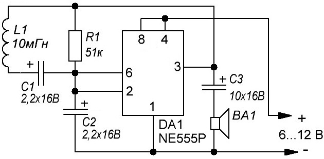

Металлоискатель-1
На рисунке 1 приведена схема простого детектора металла, датчиком детектора служит катушка L1. Напряжение питания схемы может быть в пределах от 6 до 12 В, динамик 8 Ом. Катушка L1 должна иметь достаточно большой размер и индуктивность не менее 10 мГн.

Рис. 1 - Схема металлоискателя
Таблица 1
| Обозначение | Тип | Номинал | Количество | Примечание |
|---|---|---|---|---|
| ВА1 | Звукоизлучатель | 1 | 8 Ом | |
| DA1 | Микросхема | NE555P | 1 | |
| C1, C2 | Конденсатор электролитический | 2,2 мкФ / 16В | 2 | |
| C3 | Конденсатор электролитический | 10 мкФ / 16В | 1 | |
| R1 | Резистор постоянный | 51 кОм | 1 | |
| L1 | Катушка индуктивности | 1 | самодельная |
Для изготовления катушки потребуется два CD (DWD) диска. Из картона толщиной 1-2 мм вырезаем круг диаметром 50 мм, и приклеиваем его между дисками. Для склеивания на дисках необходимо сделать поверхность шершавей и использовать термоклей.
На полученную катушку нужно намотать 315 витков медной проволоки диаметром 0,2 мм. Концы катушки припаяйте к плате.
В качестве корпуса можно взять толстую ПВХ трубу. Один конец трубы отрезать под углом 45 градусов, и к нему приклеить катушку. Схему и элемент питания поместите в саму трубу.
Работает металлоискатель следующим образом: пока рядом с катушкой нет металлических предметов, звукоизлучатель пищит с одинаковой частотой; при поднесении металлического предмета, тон звука изменяется в сторону более высокого.